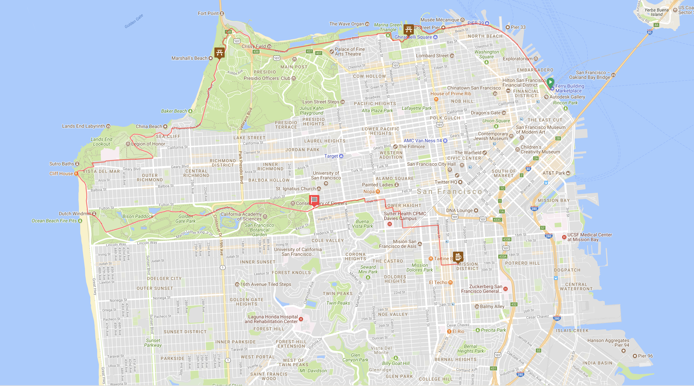

Butterlap
A weekly social bike ride around San Francisco!
- Time
- Wednesday at 7pm. Roll at 7:15.
- Place
-
The front of The Ferry Building.
-
Map

Stops
- Fort Mason Great Meadow
- Pacific Overlook
- Legion of Honor
- Clement & 43rd Ave. Regroup for the Coaster Race
- Ocean Beach. Regroup post-Coaster Race
- Panhandle. Final regroup. Lots of folks head home.
- Bender's Bar & Grill
FAQ
- What's the usual turn out?
-
5-25, average of 10. Even if there is rain, a few folks usually show up.
- What kinda ride is this?
-
Rather relaxed. Most folks show up in work attire. Sometimes, a few in
lycra. The first three stops are usually long enough to drink a beer.
- How fast do people go?
-
Its not a super speedy group ride. Faster than Bike Party or Critical
Mass, but its still a no drop, everyone is welcome ride.
- What kinda bike should I bring?
-
Whatever you got! Butter is doable on just about any bike, though gears
are recommended. It's all paved, though there are a few options for some
hard packed trails if that's your thing.
- What else should I bring?
-
A jacket and some lights are pretty important. A six pack or flask to
share are always welcome as well.
- What time does this ride end?
-
Usually folks hit the Panhandle at 9:30-10. Bender's about 15-30 minutes
after that.